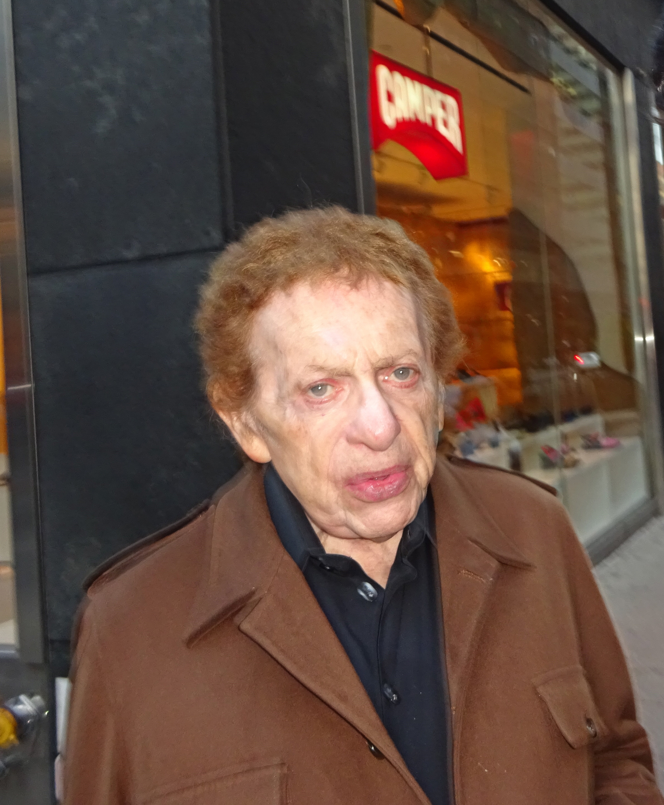
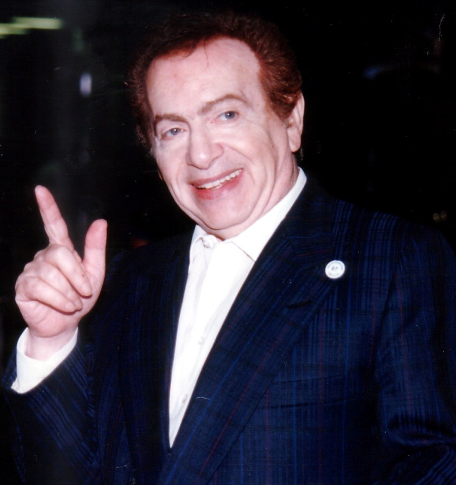
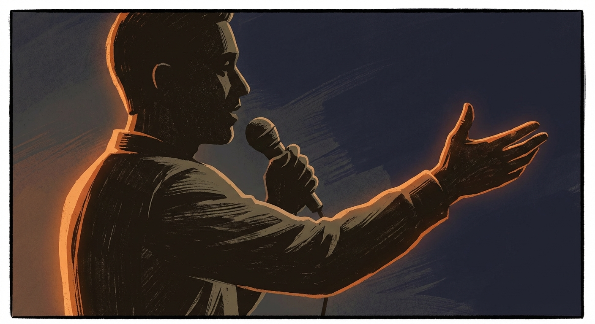

Precision timing
Jokes that land like a closing argument — but with better punchlines.
A tribute to an unmistakable voice
Comedian. Actor. Writer. A one-of-one blend of timing, intellect, and that unmistakable rhythm.
Jackie Mason (1928–2021) was an American stand-up comedian, actor, and writer known for sharp observational humor and a singular delivery that could turn a small complaint into a full philosophical argument.
From the Catskills to Broadway and beyond, his work blended cultural commentary, wordplay, and a relentless sense of timing.
Small tiles we can later replace with real clips, references, or curated links.
Jokes that land like a closing argument — but with better punchlines.
Smart, sharp observations delivered with that signature cadence.
Effortless command — the room knows who’s driving within five seconds.
A reminder that stand-up can be theatrical without losing edge.
Stories that feel like you’re eavesdropping on genius.
Influence you can hear in modern comics — even when they don’t realize it.
A small gallery of photos and visual mood pieces.



Real quotes (with sources). Want more? We can expand this into a sourced timeline.
“Every time I see a contradiction or hypocrisy in somebody’s behavior, I think of the Talmud and build the joke from there.”
“Money is not the most important thing in the world. Love is. Fortunately I love money.”
“I used to be so self-conscious that when I attended a football game, every time the players went into a huddle, I thought they were talking about me.”
Sources for the quotes above: aish.com/jackie-masons-life-and-jokes.
Tip: we can add a “Sources” section at the bottom as we collect more references.
Comedy ages in dog years — most material doesn’t survive. The stuff that does has clarity, craft, and a point of view.
This page is a starting point: a clean, elegant design you can expand into a full tribute site with photos, credits, a watchlist, and a reading list.